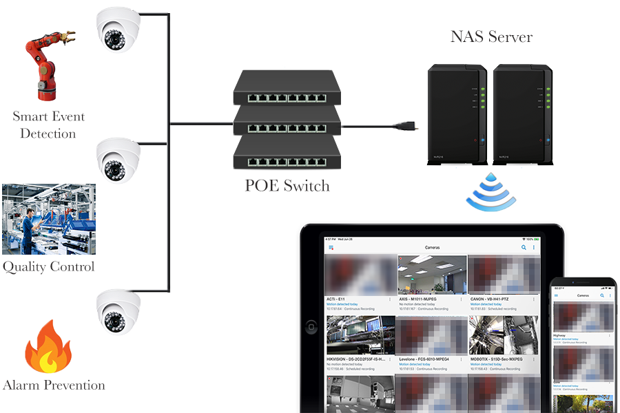
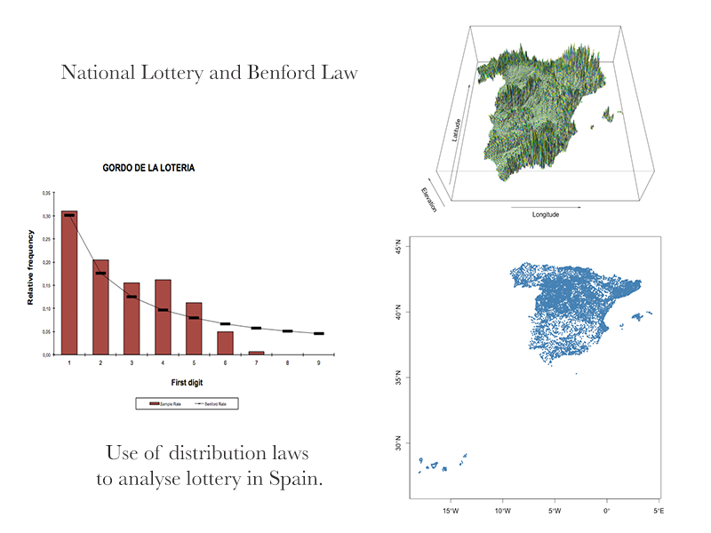
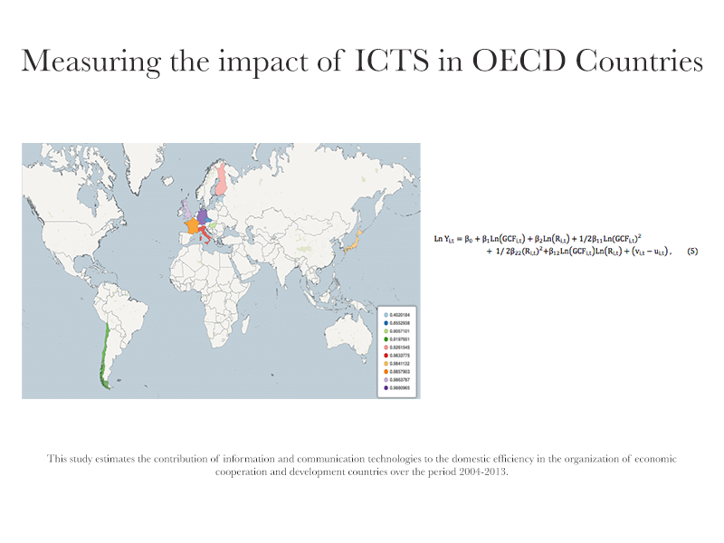

IT/BUSINESS ANALYST
by Benito Díaz-Medina, PhD
Portfolio
Industrial Applications And Data Visualization
{kind=link}
Case 1 - Stock System
Scenario - In some companies is common the use of Excel sheets to control the stock system but as soon as the dataset is increasing and the excel file is shared that can corrupt the file. Since it is a spreadsheet is always constraints.
Solution - Developed an application in MySql, Php, Javascript and Html to manage the stock control. The application is fully responsive and you can control inventory stock with your tablet, mobile or PC. Reports with Chart.js and Pivot. Easy installation in Server.
Stock System
{kind=link}
Case 2 - TV Signage
Scenario - In companies with different departments communication is challenging and you need to think in a solution to bring your message closer.
Solution - Using android, TV and special software you can stream essential information to any device. I.e Marketing advertisement in a different country. Security and safety information.
TV Signage
{kind=link}
Case 3 - Live Dashboards
Scenario - Information helps us to make decisions and it's significant to be sync with live data. Live data helps to reduce mistakes and flexibility to amend any issues.
Solution - Developed affordable Live Dashboards using Raspberry Pi, Javascript. Connected with the ERP, MySQL, SQL or ODBC data like SAGE 50 UK. Read and Write Applications.
Live Dashboards

Case 4 - Time Tracking
Scenario - In any kind of industry, time tracking is essential. In manufacturing companies assign time to different to the different areas in the production cycle is challenging. Minimize costs and assign resources in a efficient way is key.
Solution - Developed a time tracking application with SQL using RFDI readers and tags.
Time Tracking

Time Tracking
{kind=link}
Other Projects
- Website and ERP data Integrations, ODBC, SQL, MySQL.
- Automated boring stuff.
- MVP applications.
- Website applications using sockets.js, node.js, php, html, css.
IT Development
{kind=link}
Projects/Duties
Upgraded network infrastructure i.e CAT 5 to CAT 6, Switches, POE Switches
Upgraded Servers and optimization engineering
Active domain users, add users, manage permissions
MySQL, MSSQL, ERP and Applications Back ups
CASE 1 - SECURITY & QUALITY SYSTEM
Scenario - The aim of this project is quality control and security. Measuring and controlling the quality in a productive cycle requires requires plenty of resources.
Solution - Over 50 HD cameras were installed in strategy points to reduce problems that were affecting quality and preventing adverse events.
SMART CCTV
{kind=link}
Business Analyst/Development
{kind=link}
Enterprise Ireland - Market Research
{kind=link}
Market Research
{kind=link}
Entropy Analysis
{kind=link}
Sales analysis based in geolocation and clusters

Manufacturing efficiency
{kind=link}
OECD countries efficiency analysis
{kind=link}
Trade-shows
1) International trade-shows
2) European Trade-shows; London, Paris, Germany, Italy
3) IT strategy
4) Business Analyst strategies, market segmentation, clusters strategies
360 Booth
Other Analysis
Franchise cost simulator
Manufacturing Cost of Production
Market Research
Sentimental Analysis, WebScrapping, Data Mining.
Other Projects
{kind=link}
MACHINE LEARNING
{kind=link}
Computer vision to recognize products using Raspberry Pi
RESEARCH
Manufacturing Efficiency
Airports ProductivityIT/Business Analyst Portfolio by Benito Díaz-Medina